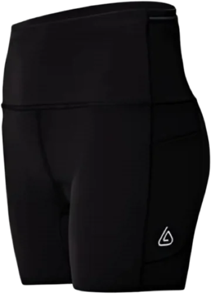
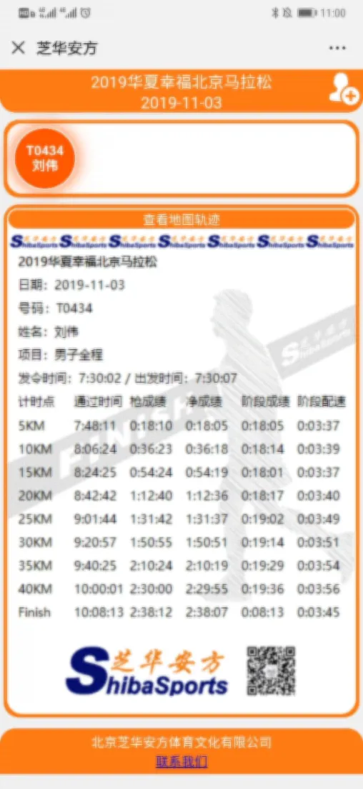
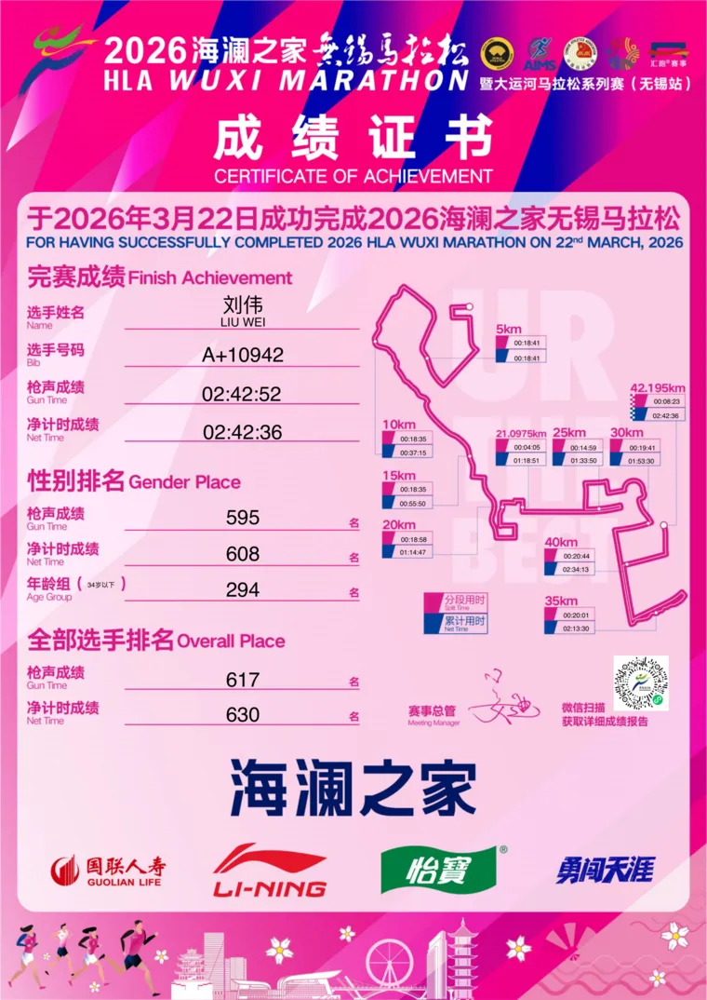
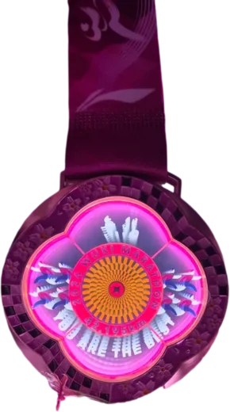
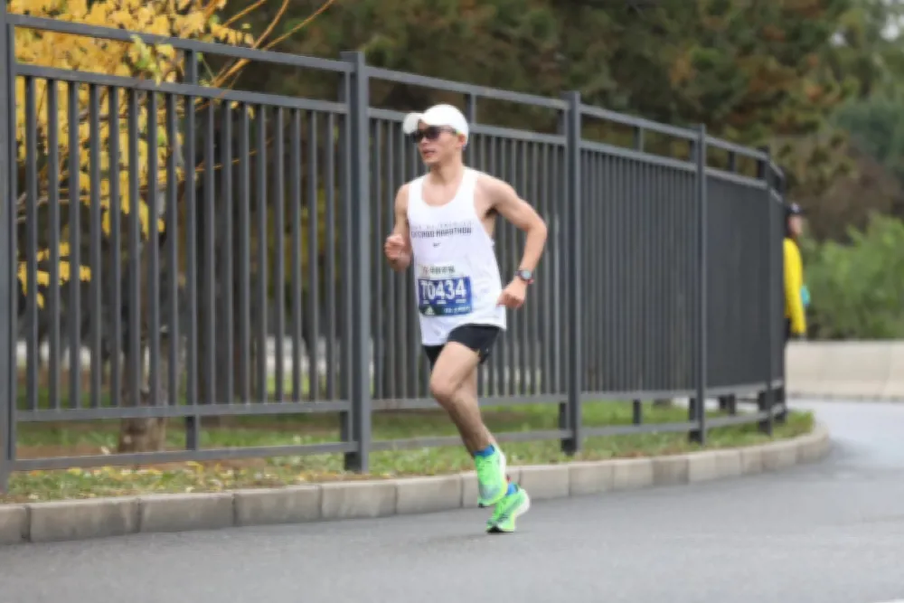
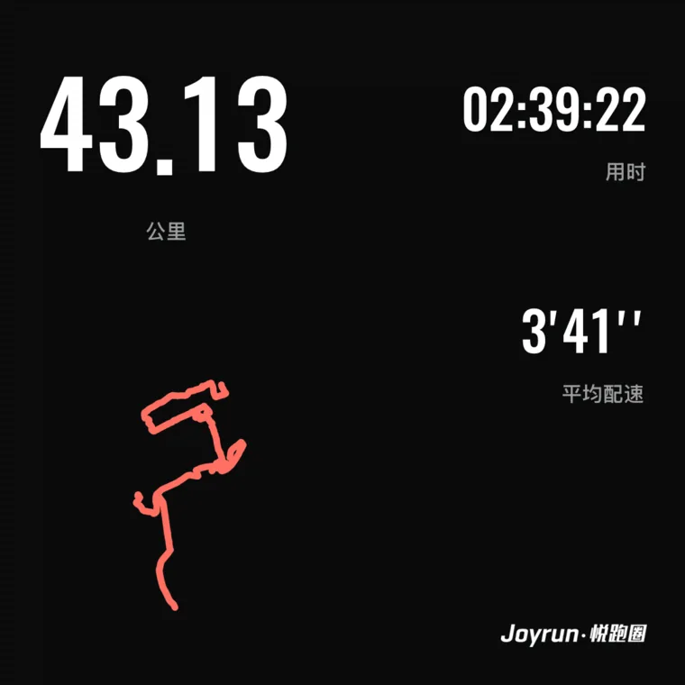
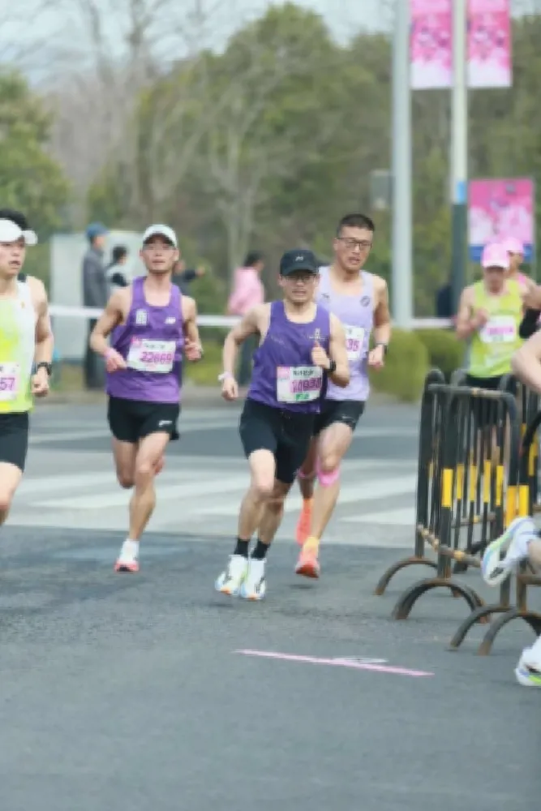

累计跑量
44,993.73
km
| 日期 | 体重 | 称重条件 |
|---|








| 项目 | 日期 | PB成绩 | 平均配速 |
|---|---|---|---|
| 5公里 | 2025-10-02 | 16:37 | 3:19/km |
| 10公里 | 2025-11-11 | 35:03 | 3:30/km |
| 半程马拉松 | 2018-11-18 | 1:15:07 | 3:34/km |
| 全程马拉松 | 2019-11-03 | 2:38:07 | 3:45/km |